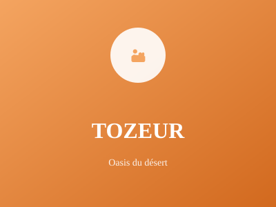

Porte du désert saharien

Porte du désert saharien, Tozeur est une destination touristique majeure. La ville est réputée pour ses dattes de haute qualité, ses oasis pittoresques et ses paysages désertiques fascinants.